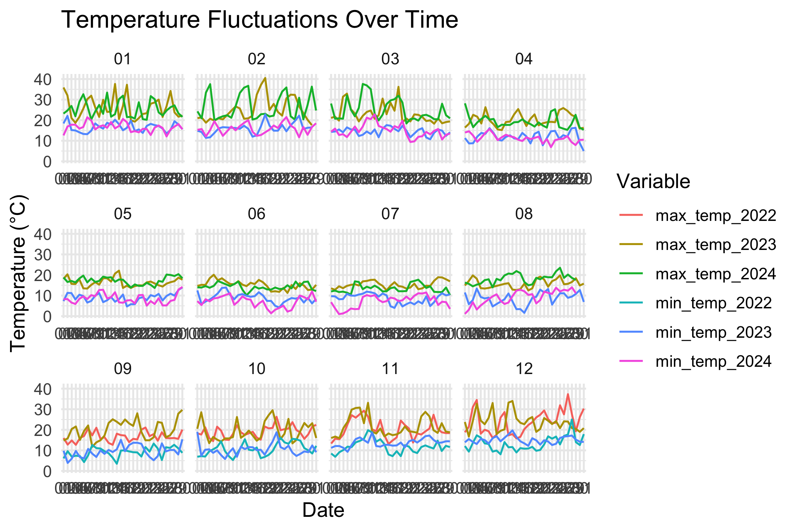

```{r cleaning_data}
weather_data <- merge(weather_data_min,
weather_data_max,
by = c("Year",
"Month",
"Day",
"Quality")) |>
rename_all(janitor::make_clean_names) |>
select(year,
month,
day,
minimum_temperature_degree_c,
maximum_temperature_degree_c) |>
rename(min_temp = minimum_temperature_degree_c,
max_temp =maximum_temperature_degree_c) |>
mutate(date = as.Date(paste(year, month, day, sep = "-"),
format = "%Y-%m-%d")) |>
filter(date > as.Date("2022-08-31") & date <= as.Date("2024-08-31"))
weather_long <- weather_data |>
pivot_longer(cols = c(min_temp, max_temp),
names_to = "variable",
values_to = "temperature") |>
mutate(variable = paste(variable,
year,
sep = "_"))
```Four Seasons in a Day: The Lore of Melbourne’s Weather
As seen in the TikTok post below, Melbourne’s weather is notorious for being erratic, changing as quickly as the blink of an eye from sunshine to rain, freezing cold to warm, or all of these in a day; the “four seasons in a day” phenomenon. In the past two years, these fluctuations have been seen to occur more frequently with less accurate weather forecasts (Attanasjo, 2024; Newswire, 2023; King et al., 2024). Why is this?
The Data for the Investigation
Where to get the data?
To investigate this weather fluctuation further in the last two years, I gathered data from the Australian Government Bureau of Meteorology website here, for weather reports in the Melbourne area near Olympic Park, which is relatively a more central area.
The two main datasets I collected were:
What is inside the data?
The original data downloaded has 8 Variables:
Product Code: Identifies the specific dataset or type of weather data being reported, in this case, IDCJAC0011.Bureau of Meteorology station number:A unique identifier for the weather observation station where the data was collected, such as station number 86338.Year:The year the data was recorded, for example, 2023.Month:The month of the year when the weather data was recorded.Day:The specific day of the month when the weather data was recorded.Maximum temperature (Degree C)orMinimum temperature (Degree C):The highest or lowest temperature recorded for the day in degrees Celsius.Days of accumulation of maximum temperature:The number of days over which maximum temperature data has been accumulated or aggregated.Quality:A measure of the reliability or accuracy of the recorded data, often indicated by a quality rating or flag.
How do we process the data?
- Download all the available data for both the maximum and minimum temperature for Melbourne (Olympic Park) station, for all years beginning from 2013 to date.
- Merge the minimum temperature data with the maximum temperature dataset by
Year,Month,DayandQuality. - Tidy up the data by renaming variables into a tidy format using janitor and removing NAs. Combine the “day/month/year” variable into a new variable called date in format: “%Y-%m-%d”, for filtering purposes.
- Filter data from 1-Sep-2022 until 31-Aug-2024 to get exactly 2 years worth of data.
- Transform the data into a longer format and separating type_temperature into 6 types, where these different types of temperature will the stored in variable:
minimum_temperature_degree_c_2022,maximum_temperature_degree_c_2022,minimum_temperature_degree_c_2023,maximum_temperature_degree_c_2023,minimum_temperature_degree_c_2024andmaximum_temperature_degree_c_2024 variableis useful for the plot creation for having different lines for each year for minimum and maximum temperature.- The data is ready for the plot making process.
Code for data cleaning
A Deep Dive into this Phenomenon
| Year | Month | Median Min Temperature | Median Max Temperature |
|---|---|---|---|
| 2022 | 09 | 9.45 | 16.00 |
| 2022 | 10 | 10.30 | 19.00 |
| 2022 | 11 | 11.60 | 19.25 |
| 2022 | 12 | 12.90 | 23.50 |
| 2023 | 01 | 16.30 | 24.20 |
| 2023 | 02 | 15.90 | 22.80 |
| 2023 | 03 | 14.60 | 21.70 |
| 2023 | 04 | 12.00 | 19.25 |
| 2023 | 05 | 9.30 | 15.90 |
| 2023 | 06 | 8.85 | 15.20 |
| 2023 | 07 | 9.60 | 14.80 |
| 2023 | 08 | 8.90 | 15.70 |
| 2023 | 09 | 9.65 | 20.25 |
| 2023 | 10 | 10.30 | 17.50 |
| 2023 | 11 | 13.75 | 19.20 |
| 2023 | 12 | 14.90 | 23.80 |
| 2024 | 01 | 16.40 | 24.20 |
| 2024 | 02 | 16.00 | 23.10 |
| 2024 | 03 | 14.40 | 22.60 |
| 2024 | 04 | 11.20 | 18.50 |
| 2024 | 05 | 8.30 | 17.10 |
| 2024 | 06 | 7.20 | 13.90 |
| 2024 | 07 | 7.70 | 13.10 |
| 2024 | 08 | 10.30 | 18.10 |

From Figure 1 plot 1 to 3 that the maximum temperatures in 2023 is quite significantly higher than 2024. The highest temperature being 40℃ in 2023. When comparing 2023 to 2022, we can see from graph 12 that 2022 had higher maximum temperatures reaching 38℃. In this case, we can see a trend that the summers had gotten cooler, especially in 2024, compared to the two previous summers (Newswire, 2023). These findings are consistent with Table 1 where we can see that the lowest median max temperature is 16℃ in 2022 and 15.2℃ in 2023, while it is 13.1℃ in 2024.
In terms of winter, plot 6 to 8 shows more frequent dips in temperature in 2024 compared to 2023, as temperatures reached nearly 0℃ on three different occasions. While in 2023, a dip nearing 0℃ occurred only once. As seen on Table 1, the lowest median minimum temperature is 9.45℃ in 2022, 8.85℃ in 2023 and 7.2℃ in 2024. We can see that the pattern is evident with 2024 being the coolest year with lower temperatures compared to the two previous years (Saunders, 2024; Convery & Taylor, 2024).
From these observations, it is evident that 2024 had cooler temperatures compared to two previous years. Why is this?
Researchers stated that this inconsistency in weather patterns can be attributed to two major factors Westra et al., 2014; Schmidt, 2023):
Climate change
Changing relationships between climate drivers including El Niño-Southern Oscillation (ENSO) and Southern Annular Mode (SAM)
Climate change causes irregularities in weather patterns, including causing unsolicited rains on a perfectly sunny day or temperature drops on a warm day (Westra et al., 2014; Schmidt, 2023). This in turn, alters the interactions between climate drivers, while the El Niño was supposed to increase temperatures, the SAM brings cold air from Antarctica to Australia, which helps to cool down the heat (Keenan, 2024). As a result, temperatures have become more unpredictable, leading to increased fluctuations and less accurate weather forecasts
So, what now?
In conclusion, we found that the year 2024 is the coolest year in the past two years, with cooler winters and summers, accompanied with more dips in the temperatures during winter (King et al., 2024). Moreover, the frequency of “four seasons in a day” occurring in Melbourne in the past two years can be attributed to climate change, which leads to erratic weather patterns and affects the relationship between climate drivers. While so, with the development of AI and weather forecasting technologies, erratic weather patterns will be more accurately predicted in the future.
References
Keenan, C. (31 January 2024). Melbourne weathers its first January without a ‘hot’ day since 1984 https://www.theguardian.com/weather/2024/jan/31/melbourne-weather-forecast-heatwaves-under-35-record
Attanasjo, J. (18 January 2024). Why Aussie weather forecasts have got it wrong during ‘weird’ summer https://au.news.yahoo.com/why-aussie-weather-forecasts-wrong-during-weird-summer-003452203.html
NewsWire. (25 August 2023). Grim hidden meaning in this image https://au.sports.yahoo.com/grim-hidden-meaning-image-235700320.html
King, A, Reid, K, Barnes, M, & Earl-Jones, N. (12 April 2024). Despite what you might hear, weather prediction is getting better, not worse https://theconversation.com/despite-what-you-might-hear-weather-prediction-is-getting-better-not-worse-225904
Westra, S., Fowler, H. J., Evans, J. P., Alexander, L. V., Berg, P., Johnson, F., Kendon, E. J., Lenderink, G., & Roberts, N. M. (2014). Future changes to the intensity and frequency of short-duration extreme rainfall https://agupubs.onlinelibrary.wiley.com/doi/full/10.1002/2014RG000464
Schmidt, S. (20 September 2023). El Niño and La Niña – what’s it all about? https://www.csiro.au/en/news/all/articles/2023/september/el-nino-la-nina
Saunders, T. (12 April 2024). BOM’s first winter forecast for 2024 declares it could be one of Australia’s warmest on record https://www.abc.net.au/news/2024-04-12/nsw-winter-forecast-one-of-warmest-on-record/103697742#
Convery, S. & Taylor, J. (2024). Australia’s south-east to endure more wintry weather after Melbourne records coldest day in five years https://www.theguardian.com/australia-news/article/2024/jun/14/melbourne-records-coldest-day-in-five-years-as-wintry-weather-blankets-australias-south-east